01
Workspace setup card squeezed to 280px
High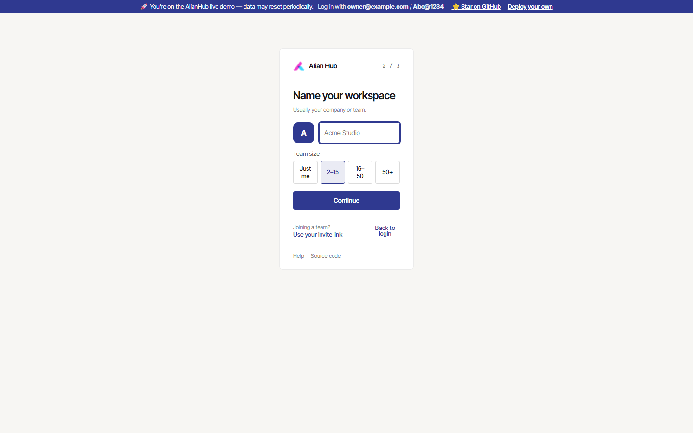
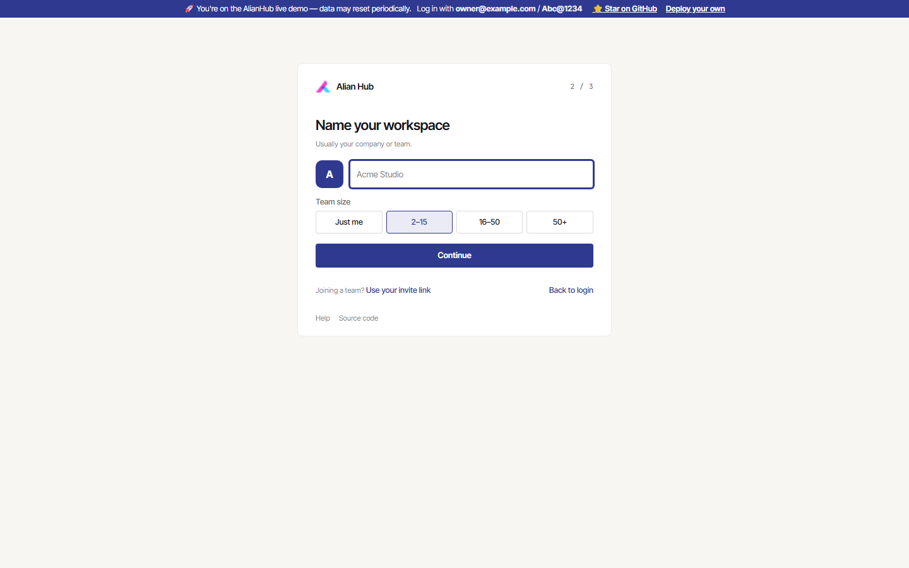
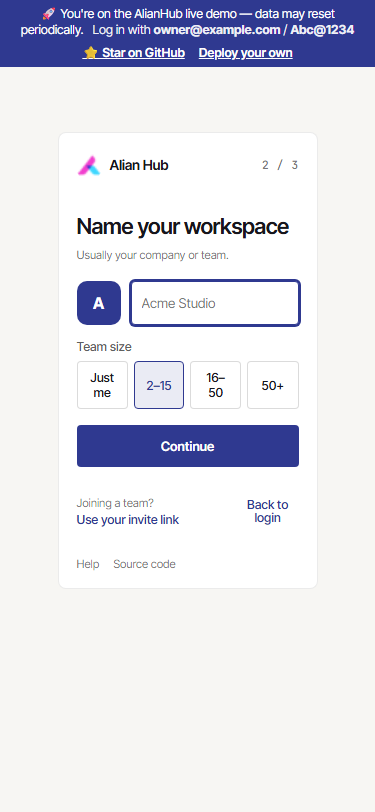
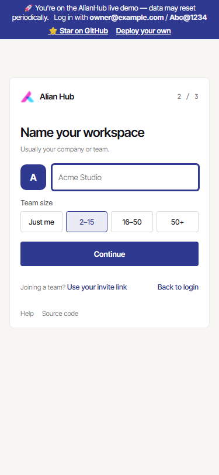
Login, setup, Home, projects (board, list, details), task detail, docs, people, team, settings, notifications, Everything, goals, planner, approvals, automations, trash and the search palette were walked at 1440px and 375px on the local server against the demo data, read-only. Seven small fixes are committed locally. Each has a before and after shot taken at the same viewport with the same data.
The demo owner's language is set to Chinese in the shared database, so the screenshots force English in the browser only, by rewriting languageCode in API responses. Nothing was changed in the database.




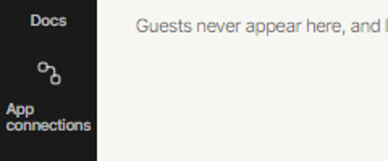
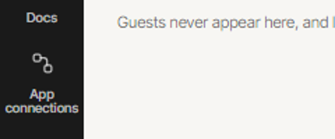
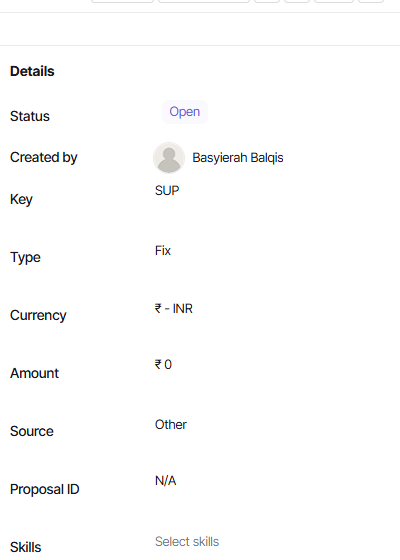
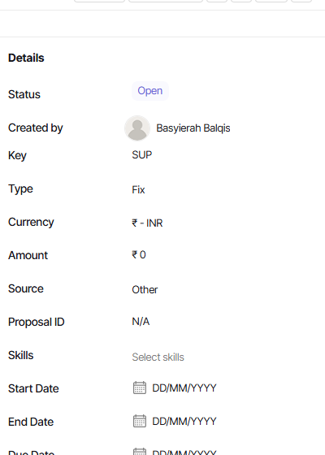
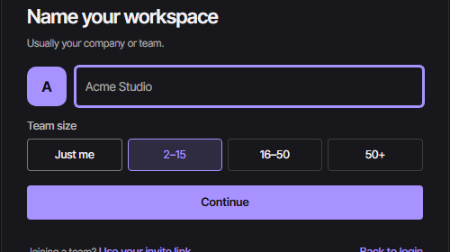
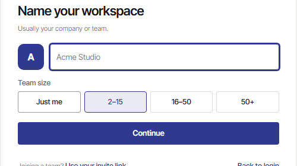
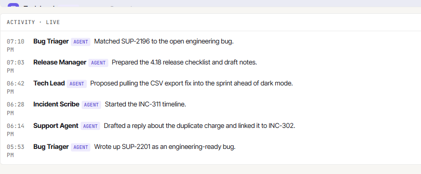
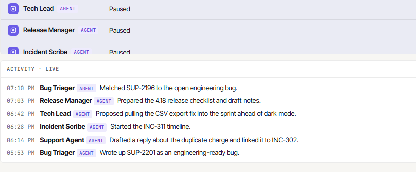
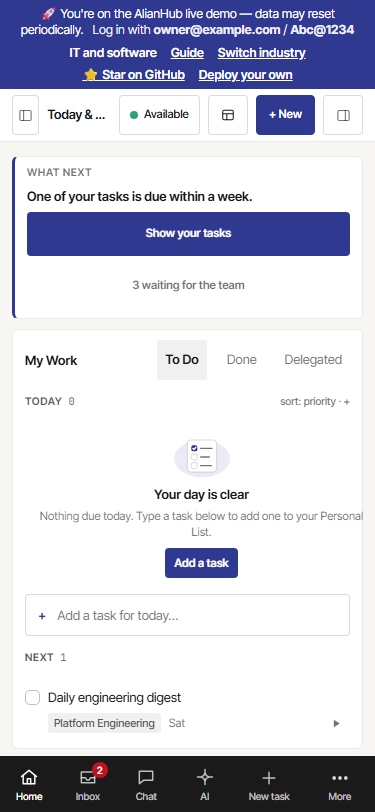
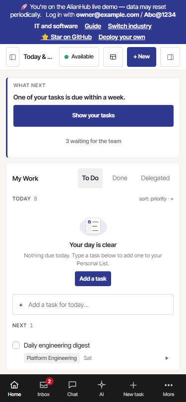
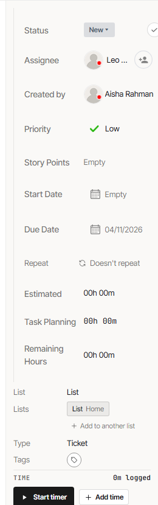
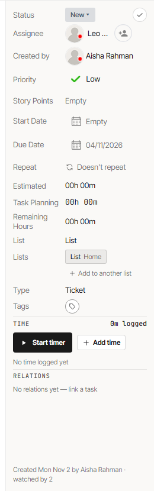
Checked at 1440px only. The phone task view opens properties from a "Properties" button, so check it there when reviewing.
These are larger than a quick fix, or sit in areas other overnight sessions own.
| Where | Issue | Why not fixed here |
|---|---|---|
| Timesheet tabs | The attached screenshot marks the Mine / Project / Workload / Tracker / Approvals tabs. On chore/pre-staging each tab box measured to wrap its own label, with the underline under "Mine", so I couldn't reproduce a misalignment. The tabs are only 29px tall, below a comfortable touch target. | views/Timesheet/** belongs to the reports session (086). |
| Demo data | The live demo owner's language is "ch", and that locale is mostly English copy, so the demo shows Chinese labels mixed with English: rail "项目", project tabs, settings. | Database setting on the shared live demo. Read-only here. |
| Project views | An unknown ?tab= value shows Project Details next to a "404 We can't find that page" card instead of falling back to the default view. | Routing behaviour, not a styling fix. |
| Settings › General | Still on the legacy look: large outline Save/Cancel buttons, a legacy milestone table, and the phone placeholder clipped to "eg. 000-000-000C". | Needs a page restyle onto ah- components. |
| Content-box sizing | Fixes 01, 03, 06 and 07 all come from width: 100% or a fixed height combined with padding on a content box. There is no global box-sizing: border-box reset, so more of these probably remain. | A global reset touches every legacy screen and needs a full visual pass. |
| Demo banner, phone | The demo banner wraps to four lines (about 90px) at 375px, about 11% of the screen, on every page. | Demo-only copy and layout decision. |
| Inbox, phone | The tab row cuts off at "D…" with no fade or arrow to show it scrolls. | Needs a shared scroll-hint pattern. |
| Approvals, desktop | Cards are capped at about 450px with full-width Approve buttons, leaving most of a 1440px page empty. | Layout decision for the page owner. |
| Task detail | The "Add description" placeholder is indented 24px from its section. "Remaining Hours" wraps. "Task Planning" is set in mono while its siblings are not. | Editor internals and copy, each its own small change. |
| Project header, phone | "+ New", "•••" and "+ Task" wrap onto a second, right-aligned row under the breadcrumb. | Header layout change. |
| Native selects | People "Reports to", Everything "Group by" and "Sort by", and Docs "Recent" use native selects next to the app's own dropdowns. | Component swap, not a quick fix. |
| Rail, 900px tall | The rail list scrolls, and an item is half hidden above "More" with no hint that more is below. | Needs a scroll-shadow treatment for the rail. |
Local API on :4440 with migrations, cron, automations and the indexer off, plus a Vue dev server on :5440. Login used the one-click demo button. Screens were captured with headless Chromium at 1440×900 and 375×812 (mobile emulation). Alignment fixes were confirmed by measuring element boxes in the page, not by eye alone. Shared files touched: the auth shell, the rail stylesheet, the EmptyState atom and the task detail overlay stylesheet, each with a one-line or selector-only change.